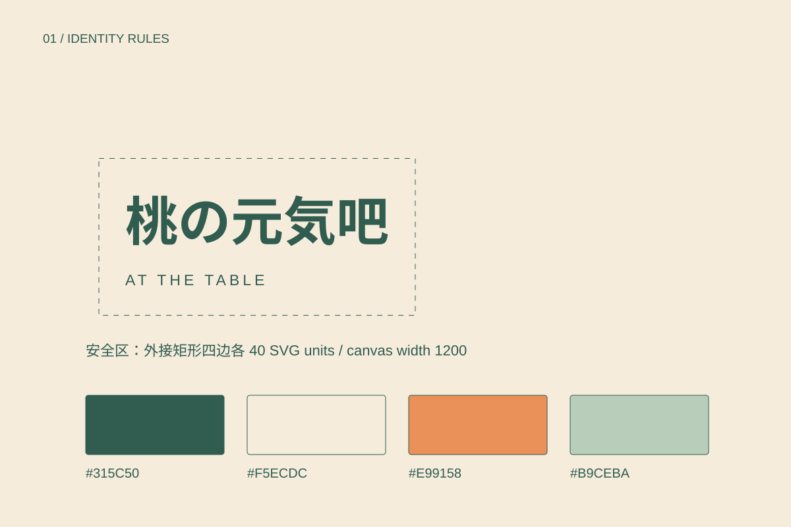
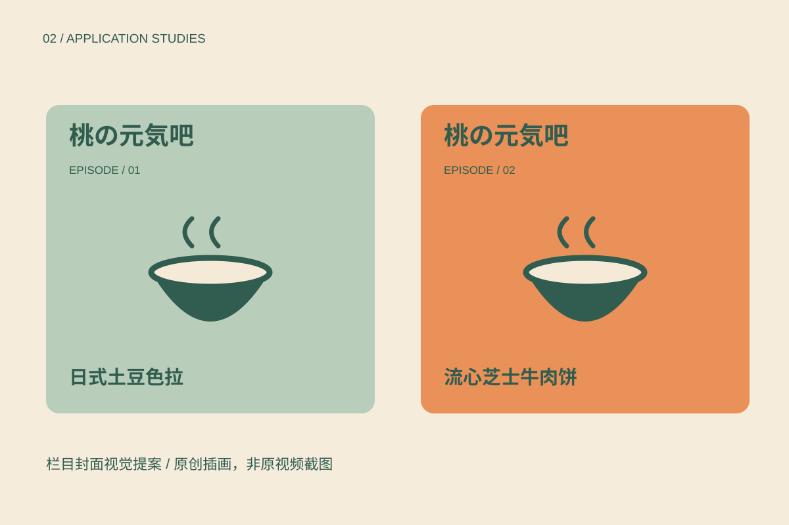
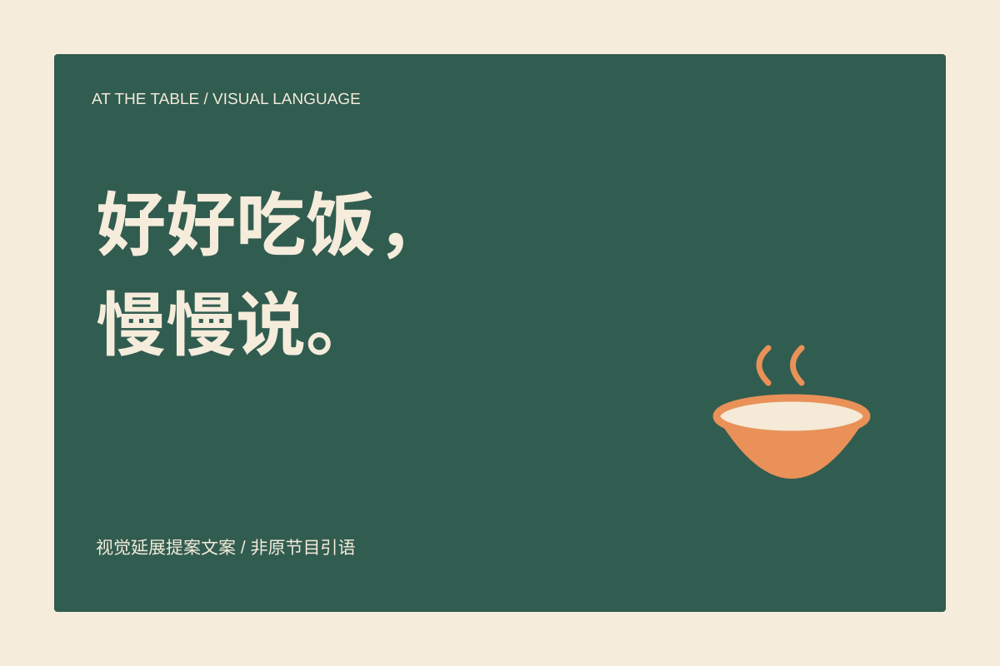

03 / Cooking & everyday stories
桃の元気吧
从料理与生活故事出发，建立温暖而有秩序的栏目视觉。

01 / THE BRIEF
从问题到规则。
已有内容以桃妈的料理、故事与生活感悟为主。本提案探索片头、期数、料理卡与社交封面的共同规则。餐桌与日常情感陪伴是设计解读，不代表已存在疗愈服务。
以碗、蒸汽和餐桌框表达日常温度，保留真实栏目身份；不把它改造成未经证实的治疗机构。
本页为基于已有栏目公开信息的新视觉扩展提案，未声明已获原品牌采用。鼎翊在原项目中的具体职责及素材权属待确认；不将原栏目内容冒称为本次原创成果。
02 / CORE IDENTITY
识别的骨架。

RULE / 01保留“桃の元気吧”原名；本页新绘组合仅为提案，不声明为原栏目正式标志或替代既有品牌。
RULE / 02森林绿承载正文，奶油白作底，陶橙用于料理与期数重点；避免把柔和色等同于医疗或心理效果。
RULE / 03采用宋体式标题与清晰黑体正文，营造生活记录感；手写感只用于短注释，不承担长文阅读。
RULE / 04以餐桌边界构成圆角框，文字区与食物插图分开；字幕位预留至少画面下方20%，示意需按实际视频验证。
03 / COLOUR & TYPE
让变化保持一致。
#315C50
#F5ECDC
#E99158
#B9CEBA
中文 Aa / 0123456789
主标题 64–120 px，章节标题 32–48 px，正文 16–18 px，注释至少 12 px。正文行高 1.7–1.85；移动端保持阅读顺序与文字对比。
语气与文案
像坐在桌边聊天，允许轻松幽默。提案文案为新写，不冒充视频原话，不承诺疗效。
网页使用设备自带字体，不分发字体文件。当前字标为字体排印提案；正式矢量字形定制、字体授权及印刷色样需在生产前完成。
04 / IN CONTEXT
从主视觉走到日常。

TOUCHPOINT / 01栏目封面：固定栏目名与期数位置，料理名置于高对比色块；全部为新绘插画，不截取或搬用视频画面。
TOUCHPOINT / 02料理故事卡：正面料理与期数，背面安排故事摘记空间；不编写原作者未说过的话。
TOUCHPOINT / 03片头与纸媒延展：展示视觉方向；与“愈见”、With you及空间的品牌关系和正式使用权限仍待确认。
应用均为原创矢量示意，非实物摄影或已落地项目证明。
05 / VISUAL LANGUAGE
一句话，一个画面。

06 / IMPLEMENTATION
规范也包括边界。
使用检查
不拉伸标志比例；不添加阴影和描边；不在复杂背景上直接压小字；不以颜色作为唯一信息编码；保留名称与必要说明的安全区。
交付与下一步
本轮交付网页案例、4张可编辑SVG展示板与可打印的规范页面。生产前还需校验最小尺寸、字形与商标、CMYK打样、真实包装刀模与实际服务信息。

07 / CONTEXT & CREDITS
来源与创作说明。
第一期：日式土豆色拉的人生哲学 · 第二期：流心芝士牛肉饼的人生哲学
研究参考：Pentagram / Parla（品牌触点的一致性）、Pentagram / Bacàn（文字节奏与空间识别）、BUCK / Headspace（形状叙事）。仅研究方法，不使用对方图片、字体、标志或图形资产。
本次新增文案、SVG图形与网页由 AI 辅助构思和制作，供鼎翊作品集探索与后续深化。真实项目原有创作者与权利归属保持不变；本页不宣称任何商业或医疗效果。